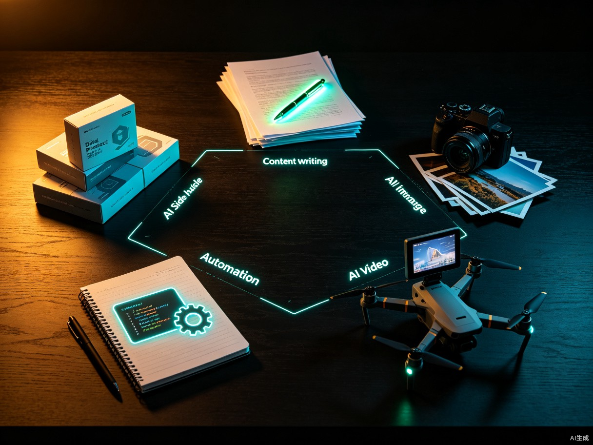

2026 年，AI 已经不再是少数极客的玩具。从闲鱼上「AI 头像定制」店铺月销两千单，到一个人用 AI 矩阵运营 50 个账号月入过万，再到 AI 生成的儿童感统训练脚本卖出 3000 份获利 6 万——普通人靠 AI 翻盘的故事正在批量发生[1][2]。但与此同时，更多的人卡在「看了无数教程，却一分钱没赚到」的怪圈里。本文不谈空泛的趋势，只拆解可落地的路径：五大方向、工具选型、定价策略、避坑要点与规模化路径。
一、AI副业的爆发：为什么是现在
理解 AI 副业为什么在 2026 年爆发，比记住几个工具更重要。三个底层变化叠加，共同把门槛压到了历史最低。
这三层叠加的结果是：过去需要团队才能完成的产出，现在一个人配几个 AI 工具就能交付。这就是 2026 年 AI 副业的底层红利——不是 AI 更聪明了，而是「一人公司」第一次真正可行。
二、AI副业的五大方向地图
在动手之前，先建立一张全景图。AI 副业不是单一赛道，而是五个差异巨大的方向，各自对应不同的能力模型与收入曲线。

| 方向 | 门槛 | 起步收入 | 天花板 |
|---|---|---|---|
| 内容代写 | 极低 | 日入 100-300 元 | 月入 1-3 万 |
| 数字产品 | 低 | 单价 19.9-99 元 | 单款破 6 万 |
| 图像定制 | 低 | 单张 5-30 元 | 月销 2000+ 单 |
| 视频矩阵 | 中 | 单脚本 50-200 元 | 月入过万 |
| 自动化服务 | 中高 | 单单 100-500 元 | 月入 3-5 万 |
三、内容代写：最快的「第一桶金」
内容代写是门槛最低、见效最快的 AI 副业。大量中小商家和个体户有在小红书、知乎、公众号发布引流文案的需求，却普遍缺乏时间或撰写能力——这就为 AI 代写创造了市场[1]。
交付模式：在闲鱼或淘宝上架服务，单篇报价 5-30 元。接单后把客户给定的主题关键词（如「防晒霜测评」）输入 AI，要求生成相应风格和长度的文案，稍作润色即可交付。熟练后 10 分钟完成一篇，日收入 100-300 元并不困难。
# 角色：小红书爆款文案写手 # 目标：为「防晒霜测评」主题生成一篇高互动文案 你是一位有 5 年经验的小红书爆款写手，擅长制造情绪钩子与互动。 请围绕「防晒霜测评」生成一篇 300 字以内的笔记，要求： 1. 开头 3 秒黄金钩子，直接抛出痛点 2. 中间分 3 个对比维度（肤感/性价比/持久度） 3. 结尾给出明确推荐 + 互动提问 4. 语气：闺蜜聊天式，每段不超过 2 行 5. 自动生成 10 个相关话题标签 请先输出文案，再输出标签列表。
关键不是 prompt 本身，而是把 prompt 沉淀成模板库。一个成熟的代写工作者通常会有 30-50 个分行业、分平台的模板，接单时直接套用，10 分钟交付的效率就是这么来的。
四、数字产品：一次劳动，无限售卖
代写是用时间换钱，天花板明显。数字产品的逻辑完全不同：整理特定垂直领域的资料，用 AI 生成核心内容，打包成 PDF 售卖，边际成本为零[1]。
典型品类包括「考公申论模板」「幼儿园教案」「儿童感统训练脚本」「行业研报模板」等。定价通常在 19.9-99 元之间，操作步骤是：选定痛点强、资料散乱的领域 → 指令 AI 按目录生成内容 → 排版导出 PDF → 在闲鱼设置自动发货。
进阶玩法是在文案中注明「购买资料可入群」，把公域流量导入私域，为后续更高客单价的咨询、培训、定制服务铺路。这是从「卖一份 PDF」升级到「卖一个解决方案」的关键跃迁。
五、图像与视频：视觉内容的批量生产
AI 头像定制是门槛最低、见钱最快的视觉副业。闲鱼、小红书上「AI 头像定制」店铺月销 2000+ 单的比比皆是，情侣头像、亲子头像、宠物拟人、个人 IP 形象需求刚性[2]。
交付模式：客户提供 3-5 张照片，用 Stable Diffusion、即梦、Midjourney 等工具训练 LoRA 或使用换脸工作流，生成指定风格的成片。单张 5-30 元，一套 10 张起售。
视频方向则更适合愿意投入时间的人。2026 年 Q1 上线 12.8 万部微短剧，其中 AI 生成短剧占比高达 95%[4]。AI 视频生成正在从「能不能生成」进入「能不能赚钱」的实用阶段。变现路径有两种：自用做号（流量主 + 带货 + 广告），或作为服务出售（单个脚本 50-200 元）[1]。
六、AI自动化服务：高客单价的杠杆生意
前四个方向都是「卖产出」，自动化服务是「卖效率」。它的本质是把 AI 工作流封装成可复用的解决方案，卖给那些「知道自己需要 AI 却不知道怎么用」的企业与个体户。
典型服务包括：为电商店铺搭建「AI 客服 + 自动回复」系统、为内容团队搭建「选题—生成—发布」流水线、为培训机构搭建「学员作业自动批改」系统。单单 100-500 元，复杂项目可到 2000-5000 元。
| 服务类型 | 典型客户 | 客单价 | 交付周期 |
|---|---|---|---|
| AI 客服搭建 | 电商、培训机构 | 500-2000 元 | 1-2 天 |
| 内容流水线 | 自媒体团队、MCN | 1000-3000 元 | 3-5 天 |
| 数据整理自动化 | 财务、运营 | 300-800 元 | 1 天 |
| 定制 Agent 开发 | 中小企业 | 2000-5000 元 | 5-10 天 |
这个方向的门槛在于需要会用 Dify、Coze、n8n 等工作流编排工具。但好消息是，这些工具的入门门槛远低于编程——一个有耐心的非技术背景玩家，1-2 周可以掌握基础，1 个月可以接到第一单。
七、工具选型与避坑指南
工具选错，事倍功半。下面这张表是 2026 年主流 AI 副业工具的实战选型，按场景而非品牌组织，避免陷入「工具崇拜」。
| 场景 | 首选工具 | 替代方案 | 月成本 |
|---|---|---|---|
| 长文 / 商业文案 | Claude Opus 4.6 | ChatGPT、Gemini | 0-150 元 |
| 图像生成 | 即梦 / Midjourney | Stable Diffusion | 0-200 元 |
| 视频生成 | 可灵 3.0 / Sora 2 | Runway、Pika | 100-300 元 |
| 数字人口播 | HeyGen | D-ID、腾讯智影 | 100-400 元 |
| 工作流编排 | Coze / Dify | n8n、FastGPT | 0-200 元 |
工具只是起点，真正决定能不能赚到钱的是避坑能力。下面这些坑，每个都让无数人血本无归：
八、从副业到主业：规模化的三条路径
当副业月收入稳定超过主业时，规模化的问题就会浮现。三条路径，对应三种性格与资源禀赋。
这三条路径没有高下之分，只有匹配与否。一个常见的误区是「副业做大了就必须开公司」——事实上，2026 年越来越多的人选择以「一人公司」形态长期运营，用 AI 替代掉传统团队里的客服、设计、内容三个岗位，把利润率做到传统公司的 3-5 倍。
回到最开始的问题：用 AI 做副业赚钱，到底能不能赚到？答案是能，但前提是你把 AI 当杠杆而不是印钞机。杠杆放大的是你原本就有的执行力、判断力与坚持。AI 不会让一个不行动的人赚到钱，但它会让一个本来就在行动的人，赚到比过去多 5 倍、10 倍的钱。这才是 2026 年 AI 副业最真实的样貌。
参考资料
- Deniel Bin《2026 年普通人靠 AI 副业变现的 5 个野路子，亲测有效（附实操步骤）》，什么值得买，2026-02-28 https://post.smzdm.com/p/ak86n5k9
- 头条报道《2026 年普通人用 AI 搞副业，到底能不能赚到钱？说点大实话》 http://m.toutiao.com/group/7663411886012105254/
- 头条报道《2026 年最狠 10 款 AI 工具，我用它们月入 3 万》 http://m.toutiao.com/group/7663500432236429833/
- AI Tools Recap《今日 AI 速读 2026-06-25：AI 短剧占比达 95%》 http://m.toutiao.com/group/7655094824470626851/